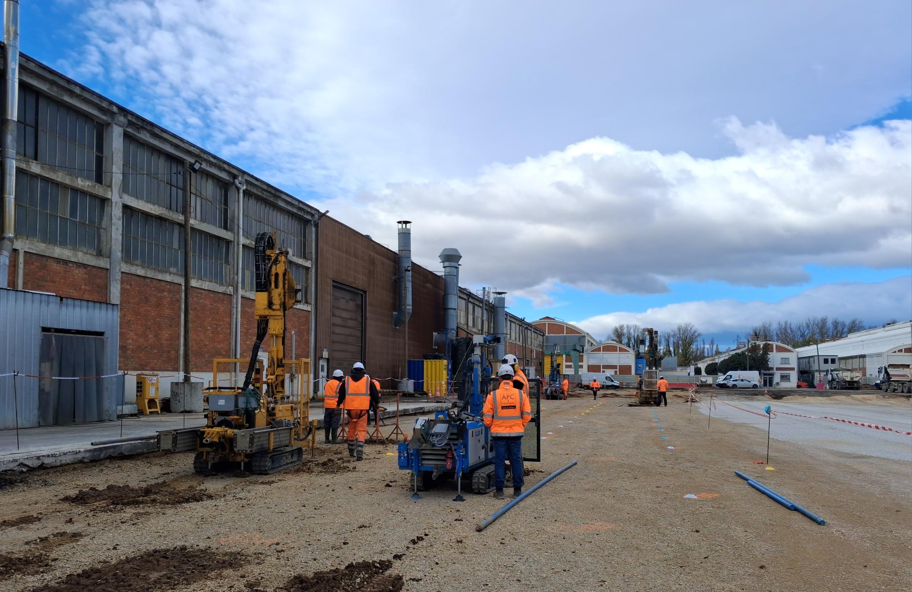

Découvrez notre panel complet de compétences en ingénierie des sols, hydrogéologie et gestion de l'environnement.
Missions d'ingénierie G1 à G5 selon la norme NF P 94-500. Réalisation de sondages in situ, calculs de fondations superficielles, profondes, radiers, dimensionnement des soutènements et amélioration de sols.
Études de gestion des ressources en eaux souterraines, implantations de piézomètres, modélisation de nappes, suivi de la qualité physico-chimique et réalisation d'essais de pompage.
Diagnostics environnementaux complets (sols, gaz, eaux), assistance à maîtrise d'ouvrage (AMO) pour la réhabilitation de friches industrielles en stricte conformité COFRAC.
Études de formulation et convenance de béton de structure, audits de centrales BPE, contrôle de résistance mécanique (Rc) et indicateurs de durabilité.
Contrôles non destructifs sur fondations existantes, auscultations dynamiques (sonique, impédance), inclinométrie et diagnostics pathologiques d'ouvrages d'art.
Réalisation de toutes les missions géotechniques selon la norme NF P 94-500 (G1 à G5). Études de faisabilité, dimensionnement de fondations superficielles et profondes, stabilité de talus, soutènements complexes et diagnostic de pathologies de bâtiments.

Mesure de la perméabilité des sols, études d'impact sur les nappes phréatiques, conception de systèmes de gestion et d'infiltration des eaux pluviales, rabattement de nappe pour chantiers de sous-sol.

Diagnostics environnementaux complets, études historiques, prélèvements et analyses chimiques de sols et d'eaux souterraines.